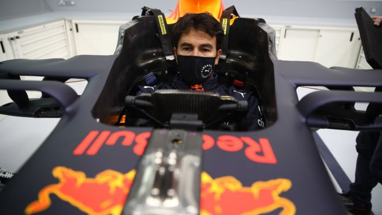

Red Bull define la fecha para presentar el coche que manejará Checo Pérez durante el 2021
El nuevo coche de Red Bull, mismo que manejará Sergio 'Checo' Pérez en la temporada 2021 ya tiene
fecha de presentación. La escudería austriaca no aguardó más y se adelantó a sus principales rivales
para dar a conocer su nuevo monoplaza el RB16B, con el que intentará romper siete años de dominio Mercedes.

El equipo de las bebidas energéticas anunció que la presentación de su monoplaza será el martes 23 de febrero,
con los que se adelanta a la propia Mercedes AMG F1 y Alpine F1 (2 de marzo) y a Ferrari, que no quitará la sábana
de su SF21 hasta el 10 de marzo.
Será el día en el que Checo Pérez aparezca con su nuevo mono oficial, en lo que representa para el mexicano la gran
oportunidad de su carrera para conseguir un título Mundial, al que también aspira, claro está, Max Verstappen, si ambos
pueden tener un coche ganador de forma consistente y no esporádico. Verstappen afronta su sexto año consecutivo en Red Bull
y vuelve a tener un compañero realmente competitivo desde la marcha de Daniel Ricciardo en 2018.
La verdadera clave de este año es si el esfuerzo final de Honda, antes de sus despedida de la F1, será lo bastante
bueno como para desafiar a Mercedes en cuanto a prestaciones y fiabilidad. Buena parte del posible éxito del RB16B,
cuyo antecesor ganó la última pruna de 2020 en Abu Dabi.